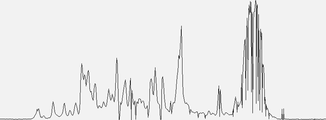

MS1 Spectra is a simple count of the number of MS1 spectra.
A consistent number of precursor spectra acquired indicates instrument stability.
The MS1 Spectra metric is the number of precursor spectra taken during the Retention Spread, the middle elution period during which most peptides elute.

Counts
Consistent
The most reproducible LC-MS performance is when this metric remains in a narrow range over a series of runs. Wide variability in any metric means your process is not reproducible.
The MS1 Spectra metric indicates the effective speed of sampling over the most information-rich section of the chromatogram.
The MS2 Spectra metric measures the number of MS2 spectra over the same Retention Spread time period. The Peptides per Minute metric tells how many peptides were detected in the same time period.